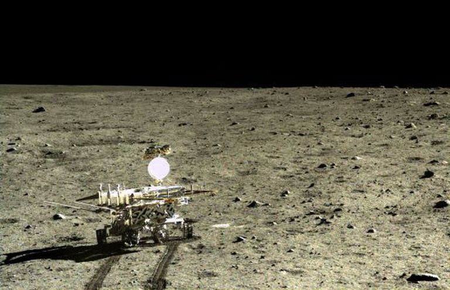

Como a impressão 3D ajudará a revolucionar a exploração espacial
A impressão 3D promete transformar não só a fabricação de produtos aqui na Terra, mas também iniciar uma nova era de construção dos componentes de naves espaciais e equipamentos fora da Terra. Esta tecnologia já está programada para ser colocada em teste no espaço em 2022, por uma empresa de fabricação 3D chamada Made in Space, e um dia poderá permitir a criação de colônias espaciais. Abordagens como essa mostram que futuro está chegando bem mais rapidamente do que parece. Por volta de 2030, espera-se que seja comum a criação de produtos sob medida, com baixo custo e sem desperdício. E não apenas no nosso planeta: a tecnologia de impressão 3D já começou a resolver problemas importantes na Estação Espacial Internacional (ISS), mostrando que será fundamental no avanço da exploração do espaço nos próximos anos. Hoje, a cadeia de suprimentos que atende os astronautas da ISS é a mais cara do universo — e nem está tão longe quanto a Lua, o próximo alvo para construção de um acampamento humano permanente. Mas as despesas dessa cadeia de suprimentos se devem quase inteiramente ao peso, e não à distância em si. É que, para levar um objeto para além da gravidade da Terra, é preciso desembolsar US$ 10.000 por libra (1 libra é um pouco menos de meio quilo). Além disso, leva meses para que esses objetos, muitas vezes peças necessárias para a manutenção da estação, cheguem à ISS. No vídeo abaixo, a Made in Space revela como planeja capacitar uma espaçonave a construir seus próprios painéis solares no espaço:
A Made in Space foi a primeira empresa a tentar solucionar esses problemas, com o objetivo de construir uma impressora 3D que funcione em ambientes de microgravidade, e levou apenas alguns anos para que sua tecnologia estivesse presente no espaço. Quando a tripulação precisar de algum objeto específico que esteja em falta na estação orbital, bastará imprimi-lo. E as opções não são limitadas — essas máquinas podem atualmente imprimir em mais de 500 materiais diferentes, como em metais, borracha, plástico, vidro, concreto e até em materiais orgânicos, como células, couro e chocolate. É possível fabricar de motores a jato a complexos de apartamentos, placas de circuito e próteses de membros para o corpo. E não é só a Made in Space que investe na área. A NASA está desenvolvendo sua própria impressora 3D, aliada à nanotecnologia, o que possibilitará confeccionar pequenas plataformas de sensores para ajudar em pesquisas espaciais. Ela usará nanomateriais como grafeno, nanotubos de carbono e dissulfito de molibdênio, o que ajudará a levar humanos para a Lua, Marte, e outros destinos. Além disso, como os objetos são criados um de cada vez, uma alteração no projeto não exige nada mais do que alterar um arquivo digital. O design do projeto, que antes era um dos componentes mais caros do processo de fabricação, agora é gratuito. E, melhor ainda, a impressão 3D é muito mais limpa e não gera desperdícios. Não há necessidade de armazéns para guardar toda uma linha de produção, já que tudo é feito apenas quando for necessário. Além do espaço necessário para os materiais de impressão e a própria impressora, a tecnologia praticamente dispensa as cadeias de distribuição, as redes de transporte, os locais de estoque, e os armazéns.
Na exploração espacial, essa revolução é de fundamental importância. Não é difícil imaginar um futuro não tão distante, quando o Homem pisar em mundos áridos e escassos em recursos, em que a impressão 3D resolverá muitos problemas, desde a fabricação de abrigos, estruturas necessárias para cultivo, itens de primeiros socorros, até alimentos, baterias, turbinas eólicas e células solares. Tudo isso já é possível imprimir aqui na Terra, e o próximo passo é levar toda essa modernidade ao espaço.